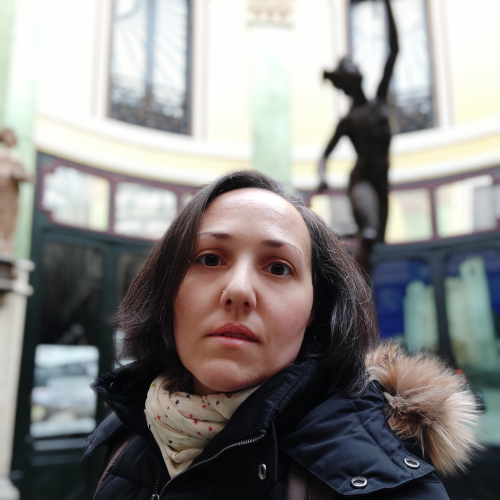

El proyecto
El mundo según Homero: de Dionisio Periegeta a Eustacio de Tesalónica
Hay una tradición geográfica griega, dominante en los textos literarios hasta época moderna, basada en los poemas de Homero. Es la tradición que nos lleva todavía a afirmar que en la Antigüedad se concebía la tierra como una superficie plana rodeada como si fuera una isla por el Océano. No sólo los poetas y prosistas que siguieron a los héroes homéricos por la geografía del mundo conocido difundieron esa imagen de la oikoumene, de la «tierra habitada»; también lo hicieron los escritores como Heródoto que se aproximaron con vocación veraz a la geografía o como el primer autor de una Geografía completa conservada, Estrabón, para quien los poemas homéricos son una guía luminosa del mundo conocido: en cuanto a los datos científicos de la geografía matemática o alejandrina (las mediciones y observaciones que permiten posicionar tanto la toponimia mítica de Homero como la contemporánea de época imperial romana) se confrontarán con la información de la Ilíada y la Odisea, cuya veracidad no se pone en duda, al contrario, necesita ser fundamentada.
Cuando Dionisio de Alejandría, un maestro de época de Adriano, compone la Periégesis, un breve poema geográfico de poco más de 1100 hexámetros (el metro de los versos homéricos), la geografía de Homero ya se había convertido en el telón de fondo difuso de un conocimiento organizado en el espacio gracias a siglos de exploración y discusión que habían establecido algunas verdades incontrovertibles, aunque insuficientes. Esa imagen de la tierra como isla oceánica, dividida en tres continentes cuyos límites con el océano eran en buena parte un misterio, necesitaba de la imaginación del ser humano para ser completada, y así las columnas de Hércules que marcan el límite entre el Atlántico y el Mediterráneo debían tener un equivalente especular, las columnas de Dióniso, en el extremo oriental de la tierra. Aun así, la literatura también había fijado en el imaginario colectivo (es el caso del viaje de los Argonautas hasta la Cólquide en busca del vellocino de Oro) y, por su parte, los periplos emprendidos por valerosos comerciantes por las costas del mar Eritreo habían proporcionado una información sobre la geografía humana y física de la que el joven romano lector de la Periégesis no podía prescindir.
Eustacio de Tesalónica, que antes de ser nombrado arzobispo de Tesalónica fue profesor de retórica en Constantinopla, comprendió el interés potencial del poema de Dionisio para los jóvenes bizantinos que debía esforzarse en educar en la lengua y la cultura de la Antigüedad griega. Como otros profesores contemporáneos, Eustacio no se limitó a explicar en sus clases algunos textos literarios (especialmente poesía) utilizando escolios, léxicos o gramáticas, sino que decidió componer comentarios exhaustivos de los poemas homéricos y de Píndaro, así como de la Periégesis. Esta labor monumental se convirtió en un referente indispensable, todavía hoy, para los estudios homéricos y para la geografía antigua, que el profesor bizantino, como no podía ser de otra manera, «re-homerizó», sometiendo el poema de Dionisio a una revisión enriquecedora y clarificadora del compendio geográfico en verso estudiado tanto en la escuela romana como en la bizantina.
Poema y comentario, geografía romana y bizantina, se aliaron así en la voluntad de un profesor constantinopolitano para perpetuar y fijar una imagen del mundo según Homero que era más fácilmente abordable utilizando la obra de otro adalid de la geografía homérica, Estrabón. Dar a conocer el mundo homérico a través de la visualización de estas obras es una oportunidad para probar que, una vez más, el legado literario de la Antigüedad griega nos llegó marcado a hierro por la mirada que Bizancio proyectó sobre él.
Miembros
Haga clic en las imágenes de perfil para desplegar el descriptor.
Inmaculada Pérez Martín
IP del proyecto
Doctora en Filología Clásica por la Universidad Complutense de Madrid. Como investigadora científica del CSIC (ILC, CCHS, Madrid), su labor de investigación está centrada en el estudio de los manuscritos bizantinos, la transmisión de los textos griegos en Bizancio y el helenismo español. Ha dirigido tres tesis doctorales, ha traducido varios libros de historia de Bizancio y es autora de las siguientes monografías: El patriarca Gregorio de Chipre (ca. 1240-1290) y la transmisión de los textos clásicos en Bizancio (Madrid 1996), Miguel Ataliates, Historia, Introducción, edición, traducción y comentario (Madrid, 2002) y Las bibliotecas del doctor Juan de Vergara y de Alfonso de Cortona (Málaga 2008). Ha sido comisaria de exposiciones de manuscritos e impresos griegos (en la Biblioteca nacional de España en 2008 o en la Universidad de Salamanca en 2012).
Juan Signes Codoñer

Miembro del equipo de investigación
Tras licenciarse en Filología Clásica por la Universidad de Salamanca en 1987, continuó sus estudios doctorales de Bizantinística en Berlín Occidental (1987-1989). Fue becario predoctoral FPU en la Universidad Complutense (1990-1993) y ayudante en la misma universidad (1995-1996). En 1996 obtuvo la titularidad de Filología Griega en la Universidad de Valladolid, donde también recibió la habilitación nacional de catedrático en 2008. Desde 2020 forma parte del Departamento de Filología Griega de la Universidad Complutense. Durante todo este tiempo ha realizado estancias de investigación en Viena, París, Birmingham, Oxford y Washington.
Sus temas de investigación son la Literatura griega, con especial atención a los procesos de reescritura de textos, así como la Historiografía, la Historia y el Derecho bizantinos, la identidad de los griegos con relación a las culturas de oriente, la tradición gramatical y la difusión de la escritura griega y el helenismo español del siglo XVI.
Desde 2016 es vicepresidente de la AIEB y desde 2017 presidente de la Sociedad Española de Bizantinística.
Jesús Polo Arrondo
Miembro del equipo de investigación
Jesús Polo estudió en la Universidad Autónoma de Madrid (UAM), donde se licenció en 2003 y donde obtuvo el doctorado en 2009. Trabaja en sintaxis y literatura del griego antiguo. Durante la elaboración de su tesis hizo estancias en la Universidad de Bolonia y en la Universidad de Ámsterdam. Desde 2007 hasta 2010 trabajó como profesor de griego en el Instituto diocesano de Filología Clásica y Oriental San Justino de Madrid. Entre 2010 y enero de 2018 ha sido profesor de Lengua y Literatura griegas en la Facultad de Literatura Cristiana y Clásica San Justino de la Universidad San Dámaso. Desde 2018 es profesor en el Departamento de Filología Clásica de la UAM. En 2009 obtuvo el Diploma Paleografía griega en la Scuola Vaticana di Paleografía, Diplomatica e Archivistica. Ha impartido cursos de Paleografía griega en el Colegio de Doctores y Licenciados de Madrid y en la UAM.
Paula Caballero Sánchez
Miembro del equipo de investigación
Paula Caballero Sánchez es profesora ayudante doctora en el área de Filología Griega de la Universidad de Málaga. Doctora en Filología Clásica por el Consejo Superior de Investigaciones Científicas y la Universidad Complutense de Madrid, su tesis doctoral fue publicada como monografía en la colección Nueva Roma (CSIC, 2018) con el título El Comentario de Juan Pediásimo a los Cuerpos celestes de Cleomedes: estudio, edición crítica y traducción.
Sus campos de investigación se centran en la recepción y transmisión de los textos poéticos y científicos bizantinos (astronomía, matemática y geografía), especialmente durante el Renacimiento Paleólogo y el Renacimiento europeo, así como en la codicología y paleografía griegas.
Desde 2010 ha colaborado con diferentes proyectos de investigación españoles y ha realizado estancias de investigación en prestigiosas instituciones: EfA (Atenas), IRHT (París), Université Sorbonne (París), CCHS-CSIC (Madrid) y, de carácter más breve, en bibliotecas europeas (Múnich, Berlín, Leiden, Ciudad del Vaticano, Florencia, Milán, Venecia, París).
Carmen García Bueno
Técnico contratado proyecto
Licenciada en Filología Clásica por la Universidad de Valladolid (2010) y doctora en la misma especialidad por la Universidad Complutense de Madrid (2017) con una tesis sobre un copista griego del s. XVI. Fue becaria FPI en el Centro de Ciencias Humanas y Sociales (CCHS) del CSIC entre 2010 y 2014. Durante este periodo realizó estancias y viajes de investigación en bibliotecas de España, Reino Unido, Italia, Polonia, Francia, Bélgica y los Países Bajos. Sus campos de investigación son los copistas griegos del siglo XVI y su presencia en bibliotecas españolas y la aplicación de herramientas electrónicas en el estudio de la Paleografía y la edición de textos.
Ha impartido docencia de textos griegos en la Universidad de Valladolid (curso 2014-2015) y de Paleografía griega y Crítica Textual en la Universidad Eclesiástica San Dámaso (Madrid, cursos 2018-2019 y 2020-2021). Actualmente cursa el máster Letras Digitales de la Universidad Complutense de Madrid.
Historia
2020
Nace el proyecto El mundo según Homero: de Dionisio Periegeta a Eustacio de Tesalónica financiado por el Programa Logos de la Fundación BBVA.
2021
Lanzamiento de la web del proyecto
Recursos
El proyecto en la PTI MedHis.